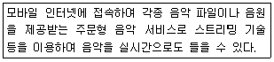
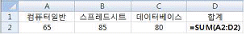
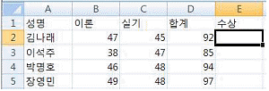
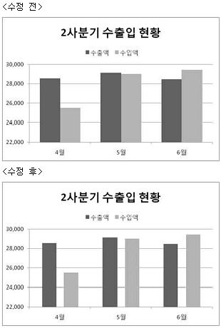
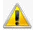
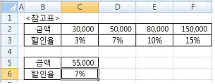
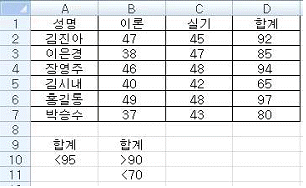
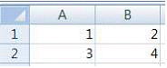

컴퓨터활용능력-2급 (2015-03-07 기출문제)
1과목: 컴퓨터 일반
1. 다음 중 아래에서 설명하는 용어는?

- VOD
- VDT
- PDA
- MOD
(정답률: 64%)

2. 다음 중 개인용 컴퓨터에서 정보통신용으로 가장 많이 사용되는 코드로 3개의 Zone 비트와 4개의 Digit 비트로 구성된 코드는?
- BINARY
- BCD
- EBCDIC
- ASCII
(정답률: 81%)
3. 다음 중 전자우편과 관련하여 스팸(SPAM)에 관한 설명으로 옳은 것은?
- 바이러스를 유포시키는 행위이다.
- 수신인이 원하지 않는 메시지나 정보를 일방적으로 보내는 행위이다.
- 다른 사용자의 개인 정보를 허락없이 가져가는 행위이다.
- 고의로 컴퓨터 프로그램 파일이나 데이터를 파괴 시키는 행위이다.
(정답률: 89%)
4. 다음 중 Windows 7에서 [디스크 정리]를 수행할 때 정리 대상 파일로 옳지 않은 것은?(윈도우 10 검증 완료)
- 임시 인터넷 파일
- 사용하지 않은 폰트(*.TTF) 파일
- 휴지통에 있는 파일
- 다운로드한 프로그램 파일
(정답률: 77%)
5. 다음 중 인터넷 기능을 결합한 TV로 각종 앱을 설치하여 웹 서핑, VOD 시청, 게임 등 다양한 기능을 활용할 수 있는 다기능 TV를 의미하는 용어는?(문제 오류로 2018년부터 IP-TV에 앱 설치가 가능하여 답이 2개가 될수 있습니다. 여기서는 기존 정답인 4번을 누르면 정답 처리 됩니다. 자세한 내용들은 해설을 참고하세요.)
- HDTV
- Cable TV
- IPTV
- Smart TV
(정답률: 79%)
6. 다음 멀티미디어 파일 형식 중에서 이미지 형식에 해당하지 않는 것은?
- BMP
- GIF
- TIFF
- WAV
(정답률: 71%)
7. 다음 중 Windows 7에서 시스템 관리와 관련된 설명으로 옳지 않은 것은?(윈도우 10 검증 완료)
- Windows에 문제가 생겼을 때를 대비하여 시스템이 최적의 상태일 때 시스템 복원을 위한 복원 지점을 만들어 둔다.
- 컴퓨터의 프로그램이 응답하지 않으면 Windows에서 문제를 검색하여 자동으로 해결하려고 하지만, 기다리지 않으려면 작업 관리자를 사용하여 프로그램을 직접 끝낸다.
- 하드디스크의 파일이 손상되었을 경우 [디스크 조각 모음]을 실행하여 디스크 최적화를 유지한다.
- 하드웨어가 작동하지 않을 때는 [장치 관리자]를 이용하여 드라이버의 업데이트를 실행한다.
(정답률: 62%)
8. 다음 중 인터넷을 이용할 때 자주 방문하게 되는 웹 사이트로 전자우편, 뉴스, 쇼핑, 게시판 등 다양한 서비스를 통합하여 제공하는 사이트는?
- 미러 사이트
- 포털 사이트
- 커뮤니티 사이트
- 멀티미디어 사이트
(정답률: 86%)
9. 다음 중 Windows 7에서 사용하는 바로 가기 아이콘에 관한 설명으로 옳지 않은 것은?(윈도우 10 검증 완료)
- 하나의 원본 파일에 대하여 하나의 바로 가기 아이콘만 만들 수 있다.
- 바로 가기 아이콘을 실행하면 연결된 원본 파일이 실행된다.
- 다른 컴퓨터나 프린터 등에 대해서도 바로 가기 아이콘을 만들 수 있다.
- 원본 파일이 있는 위치와 관계없이 만들 수 있다.
(정답률: 76%)
10. 다음 중 컴퓨터의 전원이 연결된 상태에서 장치를 연결 하거나 분리할 수 있도록 하는 기능을 의미하는 것은?
- 플러그 앤 플레이(Plug and Play)
- 핫 스와핑(Hot swapping)
- 채널(Channel)
- 인터럽트(Interrupt)
(정답률: 54%)
11. 다음 컴퓨터의 기본 기능 중에서 제어 기능에 대한 설명으로 옳은 것은?
- 자료와 명령을 컴퓨터에 입력하는 기능
- 입출력 및 저장, 연산 장치들에 대한 지시 또는 감독 기능을 수행하는 기능
- 입력된 자료들을 주기억장치나 보조기억장치에 기억하거나 저장하는 기능
- 산술적/논리적 연산을 수행하는 기능
(정답률: 68%)
12. 다음 중 국제표준화기구에서 네트워크 통신의 접속에서부터 완료까지의 과정을 구분하여 정의한 통신 규약 명칭은?
- Network 3 계층
- Network 7 계층
- OSI 3 계층
- OSI 7 계층
(정답률: 79%)
13. 다음 중 Windows의 폴더에 대한 설명으로 옳지 않은 것은?(윈도우 10 검증 완료)
- 폴더는 일반 항목, 문서, 사진, 음악, 비디오 등의 유형을 선택하여 각 유형에 최적화된 폴더로 사용 할 수 있다.
- 폴더는 새로 만들기, 이름 바꾸기, 삭제, 복사 등이 가능하며, 파일이 포함된 폴더도 삭제할 수 있다.
- 하나의 폴더 내에 같은 이름의 파일이나 폴더가 존재할 수 있으나 이름에 \, /, :, *, ?, ", <, >, | 등의 문자는 사용할 수 없다.
- 폴더의 [속성] 창에서 해당 폴더에 포함된 파일과 폴더의 개수를 확인할 수 있다.
(정답률: 70%)
14. 다음 중 컴퓨터를 처리 능력에 따라 분류할 때 이에 해당되지 않는 컴퓨터는?
- 하이브리드 컴퓨터
- 메인프레임 컴퓨터
- 퍼스널 컴퓨터
- 슈퍼 컴퓨터
(정답률: 51%)
15. 다음 중 학교를 나타내는 기관 도메인과 종류에 대한 연결이 옳지 않은 것은?
- es - 초등학교
- ms - 중학교
- sc - 고등학교
- ac - 대학교
(정답률: 78%)
16. 다음 중 1GB(Giga Byte)에 해당하는 것은?
- 1024 Bytes
- 1024 x 1024 Bytes
- 1024 x 1024 x 1024 Bytes
- 1024 x 1024 x 1024 x 1024 Bytes
(정답률: 80%)
17. 다음 입출력 장치 중 성격이 다른 장치는?
- 터치패드
- OCR
- LCD
- 트랙볼
(정답률: 56%)
18. 다음 중 프린터의 스풀 기능에 관련된 설명으로 옳지 않은 것은?
- 프린터와 같은 저속의 입출력 장치를 CPU와 병행하여 작동시켜 컴퓨터의 전체 효율을 향상시켜 준다.
- 프린터가 인쇄 중이라도 다른 응용 프로그램을 실행 할 수 있다.
- 인쇄 대기 중인 문서의 용지 방향, 용지 종류, 인쇄 매수 등의 설정을 변경할 수 있다.
- 기본적으로 모든 사용자는 자신의 문서에 대해 인쇄 일시 중지, 계속, 다시 시작, 취소를 할 수 있다.
(정답률: 58%)
19. 다음 중 컴퓨터가 부팅되지 않을 때의 원인으로 가장 적절하지 않은 것은?
- 전원 공급 장치의 이상
- 롬 바이오스의 이상
- 키보드 연결의 이상
- 바이러스의 감염
(정답률: 78%)
20. 다음 중 Windows 탐색기에서 파일이나 폴더를 선택하는 방법으로 옳은 것은?(윈도우 10 검증 완료)
- 폴더 내의 모든 항목을 선택하려면 <Alt>+<A>키를 누른다.
- 선택한 항목 중에서 하나 이상의 항목을 제외하려면 <Ctrl> 키를 누른 상태에서 제외할 항목을 클릭한다.
- 연속되어 있지 않은 파일이나 폴더를 선택하려면 <Shift>키를 누른 상태에서 선택하려는 각 항목을 클릭한다.
- 연속되는 여러 개의 파일이나 폴더 그룹을 선택 하려면 첫째 항목을 클릭한 다음 <Ctrl>키를 누른 상태에서 마지막 항목을 클릭한다.
(정답률: 49%)
2과목: 스프레드시트 일반
21. 다음 중 자동필터가 설정된 표에서 사용자 지정 필터를 사용하여 검색이 불가능한 조건은?
- 성별이 '남자'인 데이터
- 성별이 '남자'이고, 주소가 '서울'인 데이터
- 나이가 '20'세 이하이거나 '60'세 이상인 데이터
- 주소가 '서울'이거나 직업이 '학생'인 데이터
(정답률: 52%)
22. 다음 중 [시트 보호] 기능에 대한 설명으로 옳지 않은 것은?
- 새 워크시트의 모든 셀은 기본적으로 ‘잠금’ 속성이 설정되어 있다.
- 워크시트에 있는 셀을 보호하기 위해서는 먼저 셀의 ‘잠금’ 속성을 해제해야 한다.
- 시트 보호를 설정하면 셀에 데이터를 입력하거나 수정하려고 했을 때 경고 메시지가 나타난다.
- 셀의 ‘잠금’ 속성과 ‘숨김’ 속성은 시트를 보호하기 전까지는 아무런 효과를 내지 못한다.
(정답률: 71%)
23. 다음 중 아래 워크시트에서 [D2]셀에 그림과 같이 수식을 입력할 때 발생하는 문제는?

- ##### 오류
- #NUM! 오류
- #REF! 오류
- 순환 참조 경고
(정답률: 50%)
24. 다음 중 엑셀에서 사용할 수 있는 파일형식과 그에 대한 설명이 바르게 연결된 것은?
- *.txt : 공백으로 분리된 텍스트 파일
- *.prn : 탭으로 분리된 텍스트 파일
- *.xlsm : Excel 매크로 사용 통합 문서
- *.xltm : Microsoft Office Excel 추가 기능
(정답률: 63%)
25. 다음 중 정렬 기능에 대한 설명으로 옳지 않은 것은?
- 워크시트에 입력된 자료들을 특정한 순서에 따라 재배열하는 기능이다.
- 정렬 옵션 방향은 '위쪽에서 아래쪽' 또는 '왼쪽에서 오른쪽' 중 선택하여 정렬할 수 있다.
- 오름차순 정렬과 내림차순 정렬에서 공백은 맨 처음에 위치하게 된다.
- 선택한 데이터 범위의 첫 행을 머리글 행으로 지정 할 수 있다.
(정답률: 67%)
26. 다음 중 아래 워크시트에서 [E2] 셀의 함수식이 =CHOOSE(RANK(D2, $D$2:$D$5), "천하", "대한", "영광", "기쁨") 일 때 결과 값으로 옳은 것은?

- 천하
- 대한
- 영광
- 기쁨
(정답률: 81%)
27. 다음 중 아래의 <수정 전> 차트를 <수정 후> 차트와 같이 변경하려고 할 때 사용해야 할 서식은?

- 차트 영역 서식
- 그림 영역 서식
- 데이터 계열 서식
- 축 서식
(정답률: 54%)
28. 다음 중 [데이터 유효성] 기능의 오류 메시지 스타일에 해당하지 않는 것은?
- 경고(

) - 중지( )
- 정보()
- 확인()
(정답률: 78%)
29. 다음 중 아래 워크시트에서 참고표를 참고하여 55,000원에 해당하는 할인율을 [C6]셀에 구하고자 할 때의 적절한 함수식은?

- =LOOKUP(C5,C2:F2,C3:F3)
- =HLOOKUP(C5,B2:F3,1)
- =VLOOKUP(C5,C2:F3,1)
- =VLOOKUP(C5,B2:F3,2)
(정답률: 35%)
30. 다음 중 워크시트의 [틀 고정] 기능에 관한 설명으로 옳지 않은 것은?
- 워크시트에서 화면을 스크롤할 때 행 또는 열 레이블이 계속 표시되도록 설정하는 기능이다.
- 행과 열을 모두 잠그려면 창을 고정할 위치의 오른쪽 아래 셀을 클릭한 후 ‘틀 고정’을 실행한다.
- [틀 고정] 기능에는 현재 선택 영역을 기준으로 하는 ‘틀 고정’외에도 ‘첫 행 고정’, ‘첫 열 고정’ 등의 옵션이 있다.
- 화면에 표시되는 틀고정 형태는 인쇄 시에도 그대로 적용되어 출력된다.
(정답률: 55%)
31. 다음 중 아래 그림의 표에서 조건범위로 [A9:B11] 영역을 선택하여 고급필터를 실행한 결과의 레코드 수는?

- 0
- 3
- 4
- 6
(정답률: 75%)
32. 다음 중 항목 레이블이 월, 분기, 연도와 같이 일정한 간격의 값을 나타내는 경우에 적합한 차트로 일정 간격에 따라 데이터의 추세를 표시하는 데 유용한 것은?
- 분산형 차트
- 원형 차트
- 꺾은선형 차트
- 방사형 차트
(정답률: 64%)
33. 다음 중 피벗 테이블에 대한 설명으로 옳지 않은 것은?
- 원본의 자료가 변경되면 [모두 새로 고침] 기능을 이용하여 피벗 테이블에 반영할 수 있다.
- 작성된 피벗 테이블을 삭제하면 함께 작성한 피벗 차트도 삭제된다.
- 피벗 테이블을 삭제하려면 피벗 테이블 전체를 범위로 지정하고 <Delete>키를 누른다.
- 피벗 테이블 보고서에서는 값 영역에 표시된 데이터를 삭제하거나 수정할 수 없다.
(정답률: 66%)
34. 다음 중 [페이지 나누기] 기능에 대한 설명으로 옳지 않은 것은?
- [보기]탭의 [페이지 나누기 미리 보기]를 클릭하면 페이지가 나누어진 상태가 더 명확하게 구분된다.
- [페이지 나누기 미리 보기] 상태에서는 페이지 구분선을 마우스로 드래그하여 페이지 나눌 위치를 조정할 수 있다.
- [페이지 레이아웃]탭의 [나누기]-[페이지 나누기 모두 원래대로]를 클릭하여 페이지 나누기 전 상태로 원상 복귀할 수 있다.
- [페이지 나누기 미리 보기] 상태에서는 데이터를 입력하거나 편집할 수 없으므로 [기본] 보기 상태로 변경해야 한다.
(정답률: 54%)
35. 다음 중 새 매크로를 기록할 때의 과정에 대한 설명으로 옳지 않은 것은?
- <Alt>+<F8>키를 눌러 매크로 기록 대화상자를 실행 시켰다.
- 매크로 이름을 '서식변경'으로 지정하였다.
- 바로 가기 키를 <Ctrl>+<Shift>+<C>로 지정하였다.
- 매크로 저장 위치를 ‘새 통합 문서’로 지정하였다.
(정답률: 48%)
36. 다음 중 참조의 대상 범위로 사용하는 이름 정의 시 이름의 지정 방법에 대한 설명으로 옳지 않은 것은?
- 이름의 첫 글자로 밑줄(_)을 사용할 수 있다.
- 이름에 공백 문자는 포함할 수 없다.
- A1과 같은 셀 참조 주소 이름은 사용할 수 없다.
- 여러 시트에서 동일한 이름으로 정의할 수 있다.
(정답률: 65%)
37. 다음 중 아래 워크시트에서 [A1:A2] 영역은 '범위1', [B1:B2] 영역은 '범위2'로 이름이 정의되어 있는 경우 각 수식의 결과로 옳지 않은 것은?

- =COUNT(범위1, 범위2) → 4
- =AVERAGE(범위1, 범위2) → 2.5
- =범위1+범위2 → 10
- =SUMPRODUCT(범위1, 범위2) → 14
(정답률: 47%)
38. 다음 중 워크시트 셀에 데이터를 자동으로 입력하는 방법에 대한 설명으로 옳지 않은 것은?
- 셀에 입력하는 문자 중 처음 몇 자가 해당 열의 기존 내용과 일치하면 나머지 글자가 자동으로 입력 된다.
- 실수인 경우 채우기 핸들을 이용한 [연속 데이터 채우기]의 결과는 소수점 이하 첫째 자리의 숫자가 1씩 증가한다.
- 채우기 핸들을 이용하면 숫자, 숫자/텍스트 조합, 날짜 또는 시간 등 여러 형식의 데이터 계열을 빠르게 입력할 수 있다.
- 사용자 지정 연속 데이터 채우기를 사용하면 이름 이나 판매 지역 목록과 같은 특정 데이터의 연속 항목을 더 쉽게 입력할 수 있다.
(정답률: 55%)
39. 다음 중 각 수식에 대한 결과가 옳지 않은 것은?
- =MONTH(EDATE("2015-3-20", 2)) → 5
- =EDATE("2015-3-20", 3) → 2015-06-20
- =EOMONTH("2015-3-20", 2) → 2015-⑤-20
- =EDATE("2015-3-20", -3) → 2014-12-20
(정답률: 55%)
40. 다음 중 엑셀의 매크로 사용에 대한 설명으로 옳지 않은 것은?
- 리본 메뉴에 [개발 도구]탭의 표시 여부는 [Excel 옵션]에서 선택할 수 있다.
- 엑셀에서 기본적으로 사용하는 통합 문서(.xlsx)는 매크로 제외 통합 문서이다.
- 엑셀의 매크로 보안 설정은 기본적으로 ‘디지털 서명된 매크로만 포함’으로 설정되어 있다.
- [개발 도구]탭을 사용하면 매크로와 양식 컨트롤을 쉽게 사용할 수 있다.
(정답률: 53%)